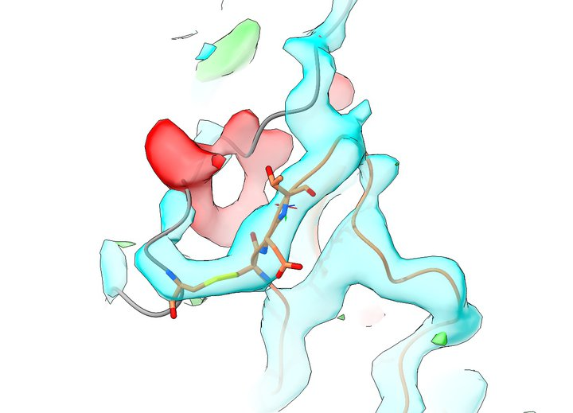
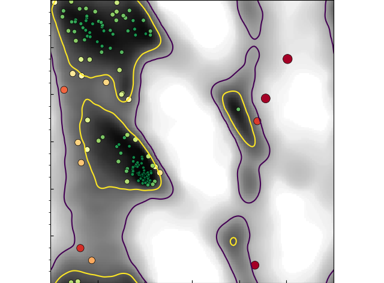

How ISOLDE came to be
Our story begins back in 2011 (or thereabouts). Following my PhD and initial postdoc in biomaterials research I found myself gravitating towards biochemistry and molecular biology, and most recently had become very excited about some surprise observations to do with insulin-like growth factor I (IGF-I) and tissue transglutaminase (you can read all about our experiments and musings on the subject here and here).
I suppose you can take the person out of the engineering lab but you can't take the engineer out of the person... in any case, I found the biochemistry experiments alone somewhat unsatisfying and really wanted to get a physical picture of what might be happening. Problem 1: I had no formal training in structural biology. Problem 2: no experimental structure of IGF-I bound to its receptor existed. Problem 3: in fact, no structure of the full length IGF-I receptor existed! The closest thing available was a 3.8Å crystal structure of the insulin receptor (sans insulin) - PDB IDs 2DTG/3LOH, (McKern et al., 2006, Smith et al., 2010). Armed with a little knowledge of molecular dynamics and a substantial dollop of the Dunning-Kruger effect, I embarked on a series of simulations aimed at finally solving the question of how insulin and IGF-I bind and activate their receptors.
Needless to say, I was largely unsuccessful in this lofty goal (although substantial progress has since been made). Rather, I was stymied by the fact that my simulations kept falling apart in strange ways. One particular domain (the third fibronectin type III domain, the last domain before the receptor enters the cell membrane) showed a disturbing tendency to partially unfold into a largely unstructured mess. Looking more closely, it began to dawn on me that certain aspects of this domain simply didn't make sense (for example, an acidic sidechain buried in the hydrophobic core). Further, I noticed there was a sequence mismatch in this domain compared to the canonical sequence - what was modelled as Cys-Asp-Thr-Arg should, according to UniPROT, have been the very different Cys-Val-Ser-Arg (this error dates back to 1985, from one of the two first published sequences of the insulin receptor).
While I look back on this as the turning point in my career leading me to ultimately commit fully to development of structural biology methods, at the time this was all something of a somewhat humbling revelation to me. Like (I suspect) many other "downstream" users of experimental structures, I had been pre-disposed to treat the experimental structure as the experimental structure - that is, the "perfect" starting model used as the yardstick against which the simulation should be measured. Furthermore, having never generated an electron density map (in fact, not even knowing how to generate an electron density map) I had no real feel for what "3.8Å resolution" really meant - after all, 3.8x10-10 m sounds like a very small distance to someone not used to thinking on atomic scales! I was soon to see how wrong I was.
One of the first hurdles I encountered was learning how to generate an electron density map from the deposited structure factors. Attempting to do so using CCP4i was not for the faint of heart - this was a package written by experts for experts, and I'm afraid that without an experienced crystallographer to guide me I found myself quite lost. I had much more success with the PHENIX GUI, which enabled me to finally produce my very first set of 2mFo-DFc and mFo-DFc maps. Opening them in VMD led to a sobering view of the offending region much like the below:

cyan = 2mFo-DFc, 2.1 RMSD; red/green = mFo-DFc, +3.0 RMSD; residues shown in stick representation are Cys647 on left, Cys860-Glu-Thr (should be Cys-Val-Ser) on right
This made it quite clear that there was a serious problem here. Following the grey chain from the top, what should be a hairpin coming down on the right and returning on the left instead jumps the gap into its own return leg and then tails off into empty space. Meanwhile, the Cys647-860 disulfide is fitted into the "turn" of the hairpin, when it should in fact be one residue back - and residues 860-865 are all threaded into density that should belong to the hairpin.
So, there was a clear problem. But what to do about it? As luck would have it the lead crystallographer from this project, Associate Prof. Mike Lawrence, was based in Melbourne - about 2,400 km from me in Brisbane (just around the corner by Australian standards). After discussing the issue, we agreed to work together on addressing it (with the aid of a 3.3Å dataset dating from around the same time as the data underlying 3LOH). After a few abortive attempts to rebuild using existing tools, I was left with a much better understanding of how this error came about in the first place (I now understand that such issues are far from rare at these resolutions)! However, I'd been intrigued for some time about the potential of molecular dynamics flexible fitting (MDFF) as a map-fitting tool - but could see that as-implemented it could never address issues like this. As it happened, though, VMD had an old and largely-forgotten interactive molecular dynamics (IMD) plugin, and I got to wondering what would happen if I combined the two concepts to make IMDFF.
To cut a long story short, this worked even better than I had hoped - and in 2016 we published a thoroughly revised model of the insulin receptor including a description of my IMDFF implementation in VMD. While preparing the manuscript I began exploring various other more-recent structures of similar resolution, leading me to discover a series of register errors in a 3.5Å structure of complement C4 (by Gregers Andersen of Aarhus University). My subsequent discussion with Gregers led to him inviting me for a 2-month sabbatical in Jan-Feb 2016, during which I re-built and re-refined three of his complement structures as well as an extremely challenging 3.5Å, highly anisotropic structure of the plasma membrane proton pump at the invitation of his colleagues Poul Nissen and Björn Pedersen.
During this two month stay in Denmark, I made a week-long side trip - a two-day visit to Cambridge, and one-day visits to Diamond Light Source and Oxford. Feedback at all three sites was very positive, and eight months later I was fortunate enough to join the lab of Randy Read at the Cambridge Institute of Medical Research.
The problem I had at this stage was this: I had more than enough data and feedback to show that IMDFF held serious promise - but the software I'd written to implement it was cobbled together largely in my spare time, and it showed. It was a nightmare to get running: requiring a custom compilation of VMD and entirely dependent upon a haptic interface (the Novint Falcon) which was sadly no longer in production, it took half a day at best to get installed on a new system, and I could only ever get it to work in a small subset of RedHat Linux flavours. I'd already come to terms with the prospect of starting over, and thanks to Randy and his postdoc Airlie McCoy I now had the time and support to do it properly. Exploring options on how to get started, I settled on OpenMM as the back-end - a fast and hyper-flexible molecular dynamics package designed specifically as a library for use in MD-based applications, it was perfect for my needs. As a graphical front-end, I ultimately decided upon ChimeraX. While very new at the time and still in early alpha, it was already impressive in its capabilities and (of particular value to me) was designed specifically as a platform for third-party plugin developers. Combined with the enthusiastic support and patient help of the ChimeraX lead graphics developer, Tom Goddard, it made getting started about as easy as I could have hoped.
The rest, as they say, is history. At the time I'm writing this it's two years and four months since I moved to Cambridge, and ISOLDE 1.0b2 is just about to go out into the wild. I hope you enjoy using it as much as I've enjoyed the journey of building it!
Design philosophy
(Disclaimer: the below describes my goals in designing ISOLDE - also described in this paper. Not all have been fully achieved yet, but I like to think I'm working in the right direction)
If I were to sum up my goals in designing ISOLDE in a single sentence it would be this: I want to help people like myself circa 2013 to understand and work effectively with structural biology models, while also helping established experts to get the best possible models out of their data with a minimum of effort.
The longer version:
Good software works, but great software teaches
In my opinion, good software helps experts to get their job done faster and better - but great software helps its users to become experts in the first place. In the case of scientific software, this means teaching the user about the underlying science in an intuitive and accessible manner - not "dumbing it down", but presenting the necessary information up-front in a way that just "makes sense", while still ensuring the details are accessible to those who really need them.
An example of what I'm talking about is my handling of Ramachandran and rotamer outliers. Traditionally, these have only been presented to the user "on request" - that is, as part of a validation task typically run at the end of a round of refinement - and shown as some combination of somewhat dry tables and 2D phi/psi Ramachandran plots. This immediately acts as a barrier to the non-expert user - in order to make use of them, the user needs to (a) know to look for them in the first place; (b) know where to look for them; (c) know what the terms "Ramachandran outlier" and "rotamer outlier" actually mean and have some grasp of their importance; and (d) know how to find the offending residues in the often-bewildering sea of atoms that is a large model.
Back in 2015 (published in 2016 in my complement C4 paper with Gregers Andersen) I began experimenting with a new approach: turning Ramachandran validation into a real-time process, and marking it up directly on the protein residues using coloured spheres centred on the alpha carbons. The video below (originally submitted as supplementary information with the aforementioned paper) is the first public demonstration of this (in ISOLDE, I've since extended upon it to include real-time highlighting of rotamer outliers and cis or twisted peptide bonds).
This approch has some major advantages. Whereas the term "Ramachandran outlier" means nothing to someone who hasn't already been taught about it, the general concept "red = bad, blue (or, these days, green) = good" is something that most of us learn in early childhood. Seeing these directly marked up on the model immediately draws the eye to the problem sites, and the real-time nature of the validation means that by simply playing with the model the user quickly learns that the colour of a given C-alpha is somehow related to the "twist" of the backbone either side of it. In this way understanding develops naturally, so when the formerly-naive user does encounter a written description of the Ramachandran plot they already have the physical understanding to take it on board.
This philosophy also drives my decisions in designing ISOLDE's GUI control panel. I avoid text menus as much as possible, opting for visually-meaningful icons (with helpful tooltips, of course) for common tasks. Additionally, I try to keep even the number of icons to a minimum: rather than adding every possible function I can think of (and hence burying the truly useful ones amongst a confusing sea of rarely-used options) the GUI should provide a set of carefully chosen and well-tuned buttons sufficient to cover the range of "workhorse" tasks. This brings me to my next major design goal:
Trivial problems should be fixed in trivial time
The vast majority of errors in any given model of reasonable resolution are quite trivial (not in their impact if left unaddressed, which can of course be quite serious, but in the scale of the change required to fix them). A peptide bond flip, say, or an incorrect rotamer only requires the concerted movement of a handful of atoms - and once seen it's often quite obvious how they need to move. Ideally, it should never be necessary for the user to spend more than a few seconds on each such case - and, of course, as many as possible should sort themselves out without any user intervention at all!
About the logo
The legend of Tristan and Isolde is an ancient love story and tragedy somewhat reminiscent of Romeo and Juliet (albeit pre-dating it by some four and a half centuries). In both stories the titular characters don't make it, dying under somewhat similar circumstances.* Tristan and Isolde are buried side-by-side, and in some retellings (in particular, the version I read at the age of ten at the urging of my headmaster) each grave grows a tree. The two trees entwine together forever after - a bittersweet, but poetic ending to the story. In the logo, the "trees" are in fact intertwined RNA chains from the core of a ribosome. The background is from the south island of New Zealand, taken on a cold and frosty morning on a lonely mountain pass (Crown Range Rd west of Queenstown, looking towards the Remarkables) during my honeymoon in 2006.
Acknowledgements and shout-outs
ISOLDE would not have come to be if it weren't for the help and support of a great many people. First up is Mike Lawrence, who not only took me seriously when I contacted him regarding what I'd found in his insulin receptor structure, but was incredibly patient with my initial mis-steps as I learned the ins and outs of how crystallographic refinement works. Then there are Bostjan Kobe and Jenny Martin, who between them introduced me to a wide range of people in the structural biology community both locally and abroad leading to quite a few productive collaborations on challenging structures. The gang at Aarhus University (Gregers Andersen, Poul Nissen and Bjørn Pedersen) not only helped me gain a foothold in this corner of the world but did so by allowing me to hack away at their prized structures. Andrew Carter extended what turned out to be a career-changing invitation to present my work at the LMB. Then, of course, Randy Read and Airlie McCoy took me under their combined wing here at the CIMR, and the other members of the PHASER team are a great group to work with.
On the software side of things, ISOLDE is well and truly built upon the shoulders of giants. First up, of course, is the ChimeraX team - in particular Tom Goddard and Eric Pettersen. It's fair to say that I wouldn't have gotten half as far as I have with ISOLDE without their help and advice (and often amazingly prompt responses to bug reports and feature requests). OpenMM is also amazing, to the point where in most respects it may as well have been custom built for my specific application. For handling crystallographic data, Kevin Cowtan's Clipper library is a clean, thoroughly-documented, logical, highly modular and compact C++ API that makes many complex tasks fast and easy. The MolProbity team at Duke have put a huge amount of painstaking work over many into collecting what I think are the most accurate structural validation datasets in existence, and summarising them into clear metrics. A special shout-out to Jane Richardson, not just for a great many discussions but for helping to really nail down a distinctive look for ISOLDE's Ramachandran plots in one afternoon during the 2017 PHENIX meeting in Santa Fe:

Thanks Jane!
I of course need to make a big shout-out to PHENIX (and, in particular, the PHENIX GUI) - a great example of software that teaches rather than just facilitates. If I hadn't found it as a newcomer to the field back in 2013, it would have taken me far longer to get up and running.
Finally, I couldn't have done this without the support of my long-suffering wife - for her patience during the many mornings, evenings and weekends I spent buried in code or choreographing atoms; for putting up with my occasional spending personal funds on high-end development laptops and travel for demos; and, of course, for agreeing to move the family to the far side of the planet chasing a dream.
* As one reviewer on my Acta D manuscript on ISOLDE kindly pointed out, this is a somewhat morbid precedent upon which to base the name of one's software. I just couldn't resist, though - like said reviewer, I just hope the Universe has enough of a sense of humour to overlook my tempting of fate in this instance.